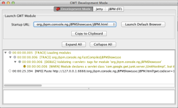

Try the jBPM Console NG (Beta)! (for developers)
Hi everyone out there! This is another post about the jBPM Console NG. After 6 months of heavy work I’m happy to be writing this post for the developers community to try it out. On this post I will be explaining how to build the application from the sources. The main idea behind this is to know how to set up your environment and modify the application while your testing it. You will basically learn all you need to know to contribute with the project.
Introduction
The jBPM Console NG aims to provide a Task & Process Management collaborative environment to facilitate the adoption of the BPM Suite in a company. Downloading the sources and compiling the application will allow you to try the application and modify it in the case that you want to extend it or fix bugs. The application is under the Apache License V2 so it can be used and modified according with this license.
Working with the Source Code
The first step in order to get everything running is to get the source code using GIT. This are the things that you need to have installed in your computer in order to proceed:
- JDK 6
- Maven 3.x
- Git
- Any IDE (Eclipse, IntelliJ, Netbeans) with the maven plugin installed
- JBoss Application Server 7.1.1 (optional)
Once you get all these tools installed we can proceed to get the source code from the github repository:
In order to get a “Clone” of the repository to work you must from the terminal:
git clone https://github.com/droolsjbpm/jbpm-console-ng.git
Once it’s done, you can compile the source code, here you have two alternatives:
1) Compile the project for development purposes with:
mvn clean install
2) Compile the project to generate the distribution wars for JBoss and Tomcat + the documentation
mvn clean install -PfullProfile
Sit back and relax! The first time that you do this step Maven requires to download tons of libraries, so you will need to wait.
Running the application in Hosted Mode
Once the project is compiled, the jbpm-console-ng-showcase can be executed in what GWT calls “Hosted Mode” (also known as Developer Mode)
In order to start up the application in hosted mode you should do the following:
1) The jBPM Console NG Showcase contains the final application distribution code:
cd jbpm-console-ng-showcase/
2) Run in hosted mode using the GWT Maven Plugin
mvn gwt:run
This will start up a Jetty + the GWT Development Mode screen which will allow you to copy the URL where the application is hosted for you to try it:

- GWT Hosted Mode
Copying the URL (http://127.0.0.1:8888/org.jbpm.console.ng.jBPMShowcase/jBPM.html?gwt.codesvr=127.0.0.1:9997) into your browser (For hosted mode you need to have the GWT plugin installed in your browser, don’t worry it’s automatically installed if you don’t have it) will open the application. I strongly recommend to use Firefox for development mode or Chrome (usually slower), because for developing we scope the compilations to work on FF and Chrome (gecko browsers).
Running the application in JBoss AS 7
Now if you want to deploy the application on JBoss, you need to go the the second compilation option (-PfullProfile) which will take some extra time to compile the application for all the browsers and all the languages (English, Spanish, etc.). In order to deploy the application to your jboss as 7 instance you will need to move the war file generated inside the jbpm-console-ng/jbpm-console-ng-distribution-wars/target/jbpm-console-ng-jboss-as7.war into the <jboss-as>/standalone/deployments directory and then rename the war file to jbpm-console-ng.war. The name of the application will be used as the root context for the application.
For the JBoss you also need to do some configurations for the users and roles. Inside the jBPM Console NG you will need to have set up the users that will be available for your installation. Those are handle by JBoss Security Domains. In order to set up the security domains, you need to do the following:
1) Edit the <jboss_as>/configuration/standalone.xml and add a new security domain:
<security-domain name=”jbpm-console-ng” cache-type=”default”>
<authentication>
<login-module code=”UsersRoles” flag=”required”>
<module-option name=”usersProperties” value=”${jboss.server.config.dir}/users.properties”/>
<module-option name=”rolesProperties” value=”${jboss.server.config.dir}/roles.properties”/>
</login-module>
</authentication>
</security-domain>
2) add the users.properties and roles.properties files
content of the user.properties file:
maciek=Merck salaboy=salaboy katy=katy john=john
content of the roles.properties file:
maciek=jbpm-console-user,kie-user,analyst,HR,PM,Reviewer salaboy=jbpm-console-user,user,analyst,PM,IT,Reviewer katy=jbpm-console-user,HR john=jbpm-console-user,Accounting
The only requirement for the roles file is to include the jbpm-console-user role for all the users.
Note that this is the simplest way of configuring a security domain, but you can go for more advanced options, like configuring the security domain to use an LDAP server or a Database to authenticate your users and roles. (https://docs.jboss.org/author/display/AS7/Security+subsystem+configuration)
Then you are ready to go, you can start jboss with:
1) Go into the bin directory:
cd <jboss-as>/bin/
2) Start the application server:
./standalone.sh
On Openshift
In order to deploy the application into openshift you need to obviously have an openshift account. Once you set up your account you will need to do almost the same configurations as in the JBoss Application. In the openshift git repository that you clone, you will have a specific dir to apply this configuration:
.openshift/config
There you will find the standalone.xml file and you can place the users.properties and roles.properties files.
So in the standalone.xml file you will need to configure the security domains as we did before and add the users.property and roles.properties files.
Besides this configuration you will need to set up a system property for storing the knowledge repository:
<system-properties>
<property name=”org.kie.nio.git.dir” value=”~/jbossas-7/tmp/data”/>
</system-properties>
The Application
Now you are ready to use the application, so if you point your browser to the URL provided by the hosted mode or to http://localhost:8080/jbpm-console-ng/ you will be able to access the login form.
As you will see, before entering the application you will need to provide your credentials. Once you are in the application is divided in:
In the Authoring section you will be able to access to the Process Designer to model your business processes. The Process Management section will allow you to list the available Business Processes and Start new instances, and also monitor those instances. The Work Section will enable you to access the Task Lists (Calendar and Grid View) to work on the tasks assigned to you. In order to use the BAM section you will need to deploy the BAM dashboard application but I will describe that in a future post.
Feel free to try it out and write a comment back if you find something wrong.
Contributions
Your feedback means a lot, but if you want to contribute, you can fork the jbpm-console-ng repository in github: https://github.com/droolsjbpm/jbpm-console-ng/
I will appreciate if you can test the Task Lists and Process Management screens and write feedback in this post, so I can iteratively improve what we have. I will be writing another post to describe the screens and also to list a set of small tasks that you can contribute back.

{kind=link}
{kind=link}
{kind=link}